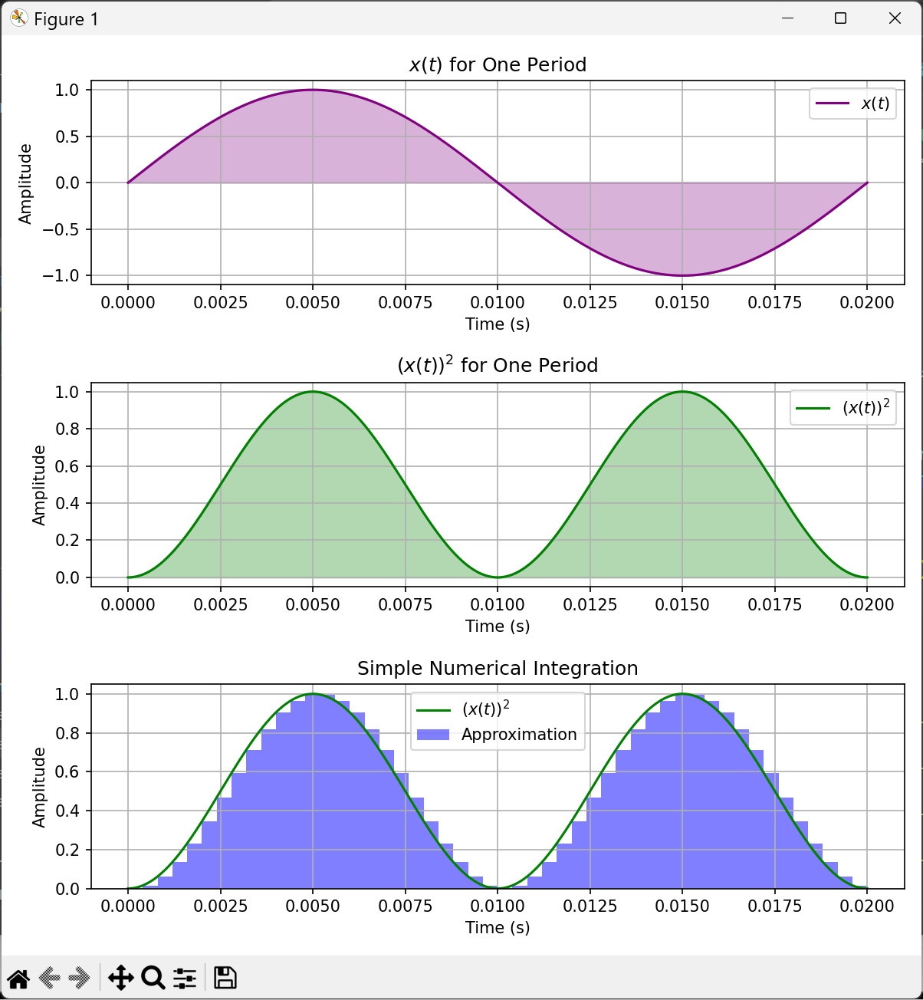
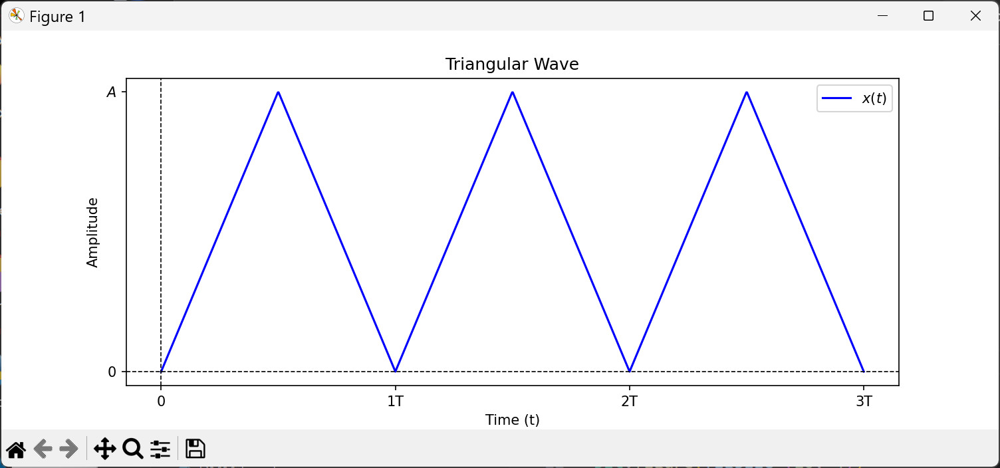

การหาค่า RMS สำหรับสัญญาณไฟฟ้า#
บทความนี้กล่าวถึง การหาค่า RMS (Root Mean Square) ของสัญญาณไฟฟ้าแบบมีคาบเวลา และมีตัวอย่างการเขียนโค้ดภาษา Python เพื่อช่วยในการคำนวณค่า RMS และแสดงผลรูปคลื่นสัญญาณพื้นฐานทางไฟฟ้า
Keywords: Root Mean Square (RMS), Python, NumPy, SymPy
- นิยามสำหรับค่า Root Mean Square
- การหาค่า RMS ของสัญญาณรูปคลื่นไซน์ (Pure Sine Wave)
- การเขียนโค้ด Python หาค่า RMS ของสัญญาณไซน์ (Sine Wave)
- RMS กับโหลดไฟฟ้าของตัวต้านทาน (Resistive Load)
- RMS กับโหลดไฟฟ้าเชิงซ้อน (Reactive Load)
- RMS สำหรับสัญญาณรูปคลื่นสี่เหลี่ยม (Square Wave)
- RMS สำหรับสัญญาณคาบรูปแบบอื่น
▷ นิยามสำหรับค่า Root Mean Square#
RMS (Root Mean Square) หรือ "รูท-มีน-สแควร์ " หมายถึง รากที่สองของค่าเฉลี่ยของกำลังสองของสัญญาณในทางไฟฟ้า และสามารถใช้กับสัญญาณที่เป็นแรงดันไฟฟ้า และกระแสไฟฟ้าก็ได้ RMS มักนำมาใช้กับสัญญาณไฟฟ้า AC และใช้เพื่อหาค่าที่แสดงถึงพลังงานไฟฟ้าของสัญญาณ AC ให้เทียบเท่ากับไฟฟ้ากระแสตรง DC ได้
ในทางคณิตศาสตร์ ถ้า เป็นฟังก์ชันที่เปลี่ยนแปลงตามเวลา หรือ ค่าของฟังก์ชันขึ้นกับตัวแปรอิสระเวลา มีค่าเป็นจำนวนจริง และกำหนดให้ เป็นฟังก์ชันที่มีคาบ กล่าวคือ สำหรับเวลา ใด ๆ การหาค่า RMS ของ ก็มีนิยามดังนี้
ซึ่งจะเห็นได้ว่า จะต้องมีการคำนวณตามลำดับดังนี้
- นำฟังก์ชัน ไปยกกำลังสองก่อน ได้เป็น
- อินทิเกรต ที่ได้จากขั้นตอนที่ 1 ในช่วงเวลา หรือ หนึ่งคาบเวลา (ในทางไฟฟ้าคือ พลังงานที่ใช้ในหนึ่งคาบเวลา)
- นำผลลัพธ์ที่ได้จากขั้นตอนที่ 2 ซึ่งจะได้เป็นค่าคงที่และมีค่าเป็นบวก ไปหารด้วยคาบเวลา ซึ่งจะได้ค่าเฉลี่ย (ในทางไฟฟ้าคือ กำลังไฟฟ้าเฉลี่ยต่อหนึ่งคาบเวลา)
- คำนวณหารากที่สองของค่าเฉลี่ยที่ได้จากขั้นตอนที่ 3
หากใช้วิธีการคำนวณเชิงตัวเลข (Numerical Computation) ก็อาจเปลี่ยนจากการหาอินทิเกรต เป็นการหาผลรวมเชิงประมาณค่า (Summation Approximation) ดังต่อไปนี้
โดยที่
- คือ จำนวนเต็มบวก เพื่อแบ่งช่วงย่อยเท่า ๆ กันในหนึ่งคาบเวลา
- คือ ความกว้างของแต่ละช่วงเวลา
- หรือใช้สัญลักษณ์ หมายถึง ค่าของสัญญาณ (Sampled Value) ณ จุดที่เวลา
- หมายถึง การนำค่า มายกกำลังสอง

รูป: ตัวอย่างกราฟสำหรับ การอินทิเกรต (การหาพื้นที่ใต้กราฟ)
ในหนึ่งคาบเวลาของฟังก์ชัน และการประมาณค่าของการอินทิเกรต โดยหาผลรวมจากแท่งสี่เหลี่ยมของแต่ละช่วงย่อย
(integral_approx.py)
▷ การหาค่า RMS ของสัญญาณรูปคลื่นไซน์ (Pure Sine Wave)#
ยกตัวอย่างฟังก์ชันหรือสัญญาณไฟฟ้าแบบไซน์บริสุทธิ์ (Pure Sine) ตามรูปแบบของฟังก์ชัน , คือ แอมพลิจูด และ คือ คาบเวลา
คำนวณค่า RMS ได้ดังนี้
ดังนั้นสำหรับสัญญาณรูปคลื่นไซน์ ค่า RMS ของสัญญาณคำนวณได้จากค่าแอมพลิจูดหารด้วย หรือ แอมพลิจูด คูณด้วยค่าประมาณ
ค่าที่แสดงบนระบบไฟฟ้า เช่น 220V ในบ้าน เป็น ค่า RMS ไม่ใช่ค่าสูงสุด ค่าแอมพลิจูด หรือ "พีค" (แรงดันไฟฟ้าสูงสุด) ก็คือ
ถ้าสัญญาณไซน์ มีค่า DC Offset ไม่เป็นศูนย์ จะคำนวณ ค่า RMS อย่างไร?
โดยที่ คือ ค่า DC Offset
import sympy as sp
t = sp.Symbol('t', real=True)
A_0, A, omega = sp.symbols('A_0 A omega', positive=True)
T = 2 * sp.pi / omega # Define the period
x_t = A_0 + A * sp.sin(omega * t) # Define the signal
integral = sp.integrate(x_t**2, (t, 0, T))
integral = sp.simplify(integral, rational=True, expand=True)
rms = sp.sqrt(integral/T)
print(rms)
# Output:
# sqrt(A**2/2 + A_0**2)
▷ การเขียนโค้ด Python หาค่า RMS ของสัญญาณไซน์ (Sine Wave)#
ถัดไปเป็นตัวอย่างโค้ด Python เพื่อคำนวณหาค่า RMS ของสัญญาณ โดยใช้ SymPy Package:
import sympy as sp
# Define symbolic variables
A, T, t = sp.symbols('A T t', real=True, positive=True)
# Define the angular frequency
omega = 2 * sp.pi / T
# Define the signal x(t)
x_t = A * sp.sin(omega * t)
# Compute RMS using symbolic method
rms_expr = sp.sqrt((1 / T) * sp.integrate(x_t**2, (t, 0, T)))
# Simplify the expression
rms_simplified = sp.simplify(rms_expr)
print("RMS = ", rms_simplified)
## RMS = sqrt(2)*A/2
หากจะลองคำนวณโดยใช้วิธีเชิงตัวเลข โดยใช้ NumPy Package คำนวณหาผลรวมตามสูตร:
ก็มีตัวอย่างโค้ดดังนี้ โดยมีการเปรียบเทียบค่า N หรือจำนวนการแบ่งช่วงย่อย เช่น 100, 500
ไปจนถึง 5000
import numpy as np
# Approximate RMS using NumPy
f = 50 # Set the frequency in Hz
T = 1 / f # Set the period in second
omega = 2 * np.pi * f # Define the angular frequency
print( f"RMS (exact) = A * {np.sqrt(2)/2:.6f}" )
for N in [100, 500, 2000, 5000]: # Use different numbers of sample points
# Compute the sample points
ts = np.linspace(0, T, N)
# Compute the samples of the signal
x_t = np.sin(omega * ts)
# Compute RMS (approx.)
rms_approx = np.sqrt( np.sum(x_t**2) / N )
print( f"N = {N:4d}, RMS = A * {rms_approx:.6f}" )
# Output
# RMS (exact) = A * 0.707107
# N = 100, RMS = A * 0.703562
# N = 500, RMS = A * 0.706399
# N = 2000, RMS = A * 0.706930
# N = 5000, RMS = A * 0.707036
แม้ว่าการเพิ่มค่าของ N ให้มากขึ้นตามลำดับ จะทำให้ ค่า RMS ใกล้เคียงค่าที่ถูกต้องมากขึ้น แต่ก็ยังไม่ใช่วิธีที่ดี
ลองมาเปรียบเทียบวิธีกาารคำนวณเชิงตัวเลขอีกวิธีหนึ่ง โดยใช้การประมาณค่าอินทิกรัล (Numerical Integration)
วิธีการหนึ่งที่สามารถนำมาใช้ได้ ชื่อว่า Simpson's 3/8 Rule หากจะคำนวณค่าประมาณของอินทิกรัล ของฟังก์ชัน ในช่วง
และคำนวณโดยแบ่งเป็นช่วงย่อย และ เป็นจำนวนเต็มบวก หารด้วย 3 ลงตัว
ตามวิธีการของ Simpson's 3/8 Rule ก็จะคำนวณค่าประมาณได้ดังนี้
ซึ่งมี คือ ค่าของฟังก์ชันที่ตำแหน่ง :
- :
- :
ดังนั้นการคำนวณค่าประมาณ RMS สำหรับสัญญาณรูปไซน์ มีตัวอย่างการเขียนโค้ดดังนี้
import numpy as np
# Approximate RMS using NumPy
f = 50 # Set the frequency in Hz
T = 1 / f # Set the period in second
omega = 2 * np.pi * f # Define the angular frequency
# Apply Simpson's 3/8 rule
for N in [9, 30, 300]: # N must be a multiple of 3
h = T / N
ts = np.linspace(0, T, N + 1) # time points
x_t = np.sin(omega*ts) # sample values
f = x_t ** 2 # squared values
# Compute integral using Simpson's 3/8 rule
approx_integral = (3 * h / 8) * (
f[0]
+ 3 * np.sum( f[1:N:3] + f[2:N:3] )
+ 2 * np.sum( f[3:N:3] )
+ f[N]
)
rms_approx = np.sqrt( approx_integral / T )
print( f"N = {N:3d}, RMS: A * {rms_approx:.6f}" )
# Output
# N = 9, RMS: A * 0.707107
# N = 30, RMS: A * 0.707107
# N = 300, RMS: A * 0.707107
จากเอาต์พุต จะเห็นได้ว่า การแบ่งจำนวนช่วงย่อยในหนึ่งคาบเวลา หากใช้ค่าN ไม่มาก
(เป็นเลขจำนวนเต็มบวกและหาร 3 ลงตัว) ก็จะได้ค่า RMS ใกล้เคียงกับค่าที่ถูกต้อง
ในการคำนวณตามวิธีการของ Simpson's 3/8 Rule
ก็อาจใช้วิธีเรียกใช้ฟังก์ชันที่มีอยู่ใน SciPy Package แล้วก็ได้ ตามตัวอย่างต่อไปนี้
import numpy as np
from scipy.integrate import simpson
# Approximate RMS using NumPy
f = 50 # Set the frequency in Hz
T = 1 / f # Set the period in second
omega = 2 * np.pi * f # Define the angular frequency
# "N must be a multiple of 3 for Simpson's 3/8 rule."
for N in [9, 30, 300]:
ts = np.linspace(0, T, N + 1) # time points
x_t = np.sin(omega*ts) # sample values
f = x_t ** 2 # squared values
integral_approx = simpson( f, ts ) # Use SciPy's Simpson integration
rms_approx = np.sqrt( integral_approx / T )
print( f"N = {N:3d}, RMS: A * {rms_approx:.6f}" )
# Output
# N = 9, RMS: A * 0.711564
# N = 30, RMS: A * 0.707107
# N = 300, RMS: A * 0.707107
▷ RMS กับโหลดไฟฟ้าของตัวต้านทาน (Resistive Load)#
ในทางไฟฟ้า หากพิจารณาโหลดไฟฟ้าเป็นตัวต้านทาน (Resistive Load) ที่มีความสัมพันธ์ระหว่างแรงดันไฟฟ้าและกระแสไฟฟ้าตามกฎของโอห์ม และให้ เป็นแรงดันไฟฟ้า ที่ตกคร่อมที่ตัวต้านทาน หรือ เป็นกระแสไฟฟ้าที่ไหลผ่านตัวต้านทาน (ความต้านทานคงที่) กำลังไฟฟ้าที่เกิดขึ้นกับตัวต้านทาน ในขณะเวลาใด จะได้เป็น
ดังนั้น ถ้าต้องการหากำลังไฟฟ้าเฉลี่ย หรือคำนวณจากพลังงานไฟฟ้าที่ใช้ไปในช่วงเวลา (หนึ่งคาบเวลา) ก็คำนวณได้ดังนี้
และ
สังเกตว่าส่วนที่อยู่ในวงเล็บคือ ค่าเฉลี่ยกำลังสองของแรงดันไฟฟ้า หรือ กระแสไฟฟ้า ตามลำดับ ดังนั้นอาจสรุปได้ว่า กำลังไฟฟ้าที่เกิดขึ้นกับตัวต้านทานเกี่ยวข้องกับค่า RMS ดังนี้
▷ RMS กับโหลดไฟฟ้าเชิงซ้อน (Reactive Load)#
แต่หากว่า โหลดไฟฟ้ามีลักษณะหรือคุณสมบัติแบบตัวเก็บประจุ (C) หรือตัวเหนี่ยวนำ (L) หรือ เรียกว่า "โหลดเชิงซ้อน" (Reactive Load) และใช้กับไฟฟ้า AC ที่เป็นรูปคลื่นไซน์เท่านั้น และมีความถี่คงที่ เช่น 50Hz การคำนวณ ก็จะแตกต่างจากกรณีของตัวต้านทาน และจะต้องพิจารณา "ตัวประกอบกำลัง" (Power Factor, PF) ด้วย
กำหนดให้ มีหน่วยเป็น V) และ มีหน่วยเป็น A เป็นไปตามฟังก์ชันรูปคลื่นไซน์ มีความถี่เท่ากัน แต่มีค่าเฟสต่างกันได้ โดยที่
- เป็นความถี่เชิงมุม (คงที่)
- คือ มุมเฟสระหว่างแรงดันและกระแสไฟฟ้าที่เกิดขึ้นกับตัวโหลดไฟฟ้า
- คือ แอมพลิจูดของแรงดันไฟฟ้า
- คือ แอมพลิจูดของกระแสไฟฟ้า
ตัวอย่างโค้ด Python สำหรับการแสดงรูปคลื่นสัญญาณ AC สำหรับแรงดันไฟฟ้า กระแสไฟฟ้า และกำลังไฟฟ้า
import numpy as np
import matplotlib.pyplot as plt
# Constants
f = 50 # Frequency in Hz
T = 1 / f # Period
phi = np.deg2rad(30) # Phase shift in radians
# Time array for two periods
T_total = 2 * T # Total time for two periods
num_points = 1000 # Number of points for smooth plotting
t = np.linspace(0, T_total, num_points)
# Voltage and current waveforms
Vm = 1.0 # Amplitude for voltage [V]
Im = 1.0 # Amplitude for current [A]
v_t = Vm * np.sin(2 * np.pi * f * t)
i_t = Im * np.sin(2 * np.pi * f * t + phi)
p_t = v_t * i_t # Instantaneous power
# Create subplots
fig, axs = plt.subplots(2, 1, figsize=(10, 6))
# First subplot: Voltage, Current, and Instantaneous Power
axs[0].plot(t, v_t, label='$v(t) = sin(2\pi f\, t)$', color='b')
axs[0].plot(t, i_t, label='$i(t) = sin(2\pi f\, t + 30°)$', color='r')
axs[0].set_xlabel('Time (s)')
axs[0].set_ylabel('Amplitude')
axs[0].set_title('Voltage, Current, and Instantaneous Power')
axs[0].legend(loc='upper right')
axs[0].grid()
# Second subplot: Instantaneous Power
axs[1].plot(t, p_t, label='$p(t)$', color='purple')
axs[1].fill_between(t, p_t, where=(t <= 2*T), color='purple', alpha=0.3)
axs[1].set_xlabel('Time (s)')
axs[1].set_ylabel('Amplitude')
axs[1].set_title('Instantaneous Power $p(t)$')
axs[1].legend()
axs[1].grid()
plt.tight_layout()
plt.show()
รูป: ตัวอย่างการแสดงรูปคลื่นสัญญาณ (สำหรับเวลาในช่วง หรือ 2 คาบเวลา)
กำลังไฟฟ้าในเวลาใด ๆ (Instantaneous Power) คำนวณได้จาก
หากใช้สูตร
ก็เขียนสมการสำหรับ ได้เป็น
และกำลังไฟฟ้าเฉลี่ย ก็หาได้จาก
และ ก็คือ ค่าตัวประกอบกำลัง (Power Factor)
ในกรณีที่โหลดไฟฟ้าเป็นตัวต้านทาน (Resistive Load) แรงดันและกระแสไฟฟ้ามีมุมเฟสที่ต่างกันเป็น ดังนั้น ค่าตัวประกอบกำลัง จะมีค่าเป็น
ลองเปรียบเทียบกับการเขียนโค้ดโดยใช้ SymPy Package ดังนี้
import sympy as sp
# Define symbols
t, T, V_m, I_m, theta = sp.symbols('t T V_m I_m theta',
real=True, positive=True)
omega = 2 * sp.pi / T # Angular frequency
# Define voltage and current functions
v_t = V_m * sp.sin(omega * t)
i_t = I_m * sp.sin(omega * t + theta)
p_t = v_t * i_t # Instantaneous power
# Compute average power over one period
P_avg = (1 / T) * sp.integrate(p_t, (t, 0, T))
# Display the result
print( "p(t) =", sp.simplify(p_t) ) # Instantaneous Power
print( "P =", sp.simplify(P_avg) ) # Average Power
# Output
# p(t) = I_m*V_m*(cos(theta) - cos(theta + 4*pi*t/T))/2
# P = I_m*V_m*cos(theta)/2
▷ RMS สำหรับสัญญาณรูปคลื่นสี่เหลี่ยม (Square Wave)#
กำหนด เป็นสัญญาณที่มีคาบเวลา และในหนึ่งคาบมีการแบ่งค่าออกเป็น 2 ช่วง ดังนี้
โดยที่ ก็คือ ค่า Duty Cycle ของสัญญาณ
การจำแนกประเภทของสัญญาณสี่เหลี่ยม:
- Unipolar square wave:
- Bipolar square wave:
ตัวอย่างการเขียนโค้ด Python เพื่อคำนวณค่า RMS และแสดงรูปกราฟ มีดังนี้
import sympy as sp
import numpy as np
import matplotlib.pyplot as plt
# Define symbolic variables
t, A, T, D = sp.symbols('t A T D', real=True, positive=True)
# Define square wave function explicitly
def compute_rms_square(T, D, Vmax, Vmin):
x_t = sp.Piecewise((Vmax, t % T < D * T), (Vmin, True))
# Compute RMS by integrating over one period
integral = sp.integrate( Vmax**2, (t, 0, D*T) ) \
+ sp.integrate( Vmin**2, (t, D*T, T) )
# Compute RMS
x_rms = sp.sqrt((1/T) * integral).simplify()
return x_rms
# Compute RMS values
rms_unipolar = compute_rms_square(T, D, A, 0)
print(f"RMS of a square wave (unipolar): {rms_unipolar}")
rms_bipolar = compute_rms_square(T, D, A, -A)
print(f"RMS of a square wave (bipolar): {rms_bipolar}")
# Define numerical values for plotting
A_val, T_val, D_val = 1.0, 1.0, 0.5
N = 1000
ts = [0, 4*T_val]
t_vals = np.linspace(ts[0], ts[1] , N)
# Generate square wave functions
x_unipolar = np.where((t_vals % T_val) < (D_val * T_val), A_val, 0)
x_bipolar = np.where((t_vals % T_val) < (D_val * T_val), A_val, -A_val)
# Compute RMS values numerically
rms_unipolar_val = float(rms_unipolar.subs({A: A_val, T: T_val, D: D_val}))
rms_bipolar_val = float(rms_bipolar.subs({A: A_val, T: T_val, D: D_val}))
# Plot subplots
fig, axs = plt.subplots(2, 1, figsize=(10, 6), sharex=True)
# Plot Unipolar Square Wave
axs[0].plot(t_vals, x_unipolar, label="Unipolar Square Wave", color='b')
axs[0].axhline(y=rms_unipolar_val, color='r',
linestyle='--', label=f'RMS = {rms_unipolar_val:.4f}')
axs[0].set_ylabel("Amplitude")
axs[0].set_title("Unipolar Square Wave and RMS")
axs[0].legend()
axs[0].grid()
# Plot Bipolar Square Wave
axs[1].plot(t_vals, x_bipolar, label="Bipolar Square Wave", color='g')
axs[1].axhline(y=rms_bipolar_val, color='r',
linestyle='--', label=f'RMS = {rms_bipolar_val:.4f}')
axs[1].set_xlabel("Time (t)")
axs[1].set_ylabel("Amplitude")
axs[1].set_title("Bipolar Square Wave and RMS")
axs[1].legend()
axs[1].grid()
plt.tight_layout()
plt.show()
# Output:
# RMS of a square wave (unipolar): A*sqrt(D)
# RMS of a square wave (bipolar): A
รูป: การแสดงคลื่นสัญญาณ Square โดยใช้ค่าพารามิเตอร์ A=1.0, T=1.0, D=0.5
สังเกตได้ว่า ในกรณีของสัญญาณสี่เหลี่ยมที่เป็น Unipolar Square Wave มีค่าอยู่สองระดับคือ 0 และ A หากมีค่า Duty Cycle = 50% หรือ D=1/2 จะได้ค่า RMS เท่ากับ ซึ่งตรงกับค่า RMS ของสัญญาณไซน์ที่มีแอมพลิจูด
▷ RMS สำหรับสัญญาณคาบรูปแบบอื่น#
1) สัญญาณเรียงกระแสแบบเต็มคลื่น Full-Wave Rectified Sine:
สัญญาณนี้ มีคาบเท่ากับ และค่า RMS ของสัญญาณ สามารถคำนวณได้ดังนี้
รูป: สัญญาณ Full-Wave Rectified Wave
2) สัญญาณเรียงกระแสแบบครึ่งคลื่น Half-wave Rectified Sine Wave
สัญญาณนี้ มีคาบเท่ากับ และค่า RMS ของสัญญาณ สามารถคำนวณได้ดังนี้
รูป: สัญญาณ Half-Wave Rectified Sine
3) สัญญาณฟันเลื่อย Sawtooth Wave
สัญญาณนี้ มีคาบเท่ากับ และค่า RMS ของสัญญาณ สามารถคำนวณได้ดังนี้
รูป: สัญญาณ Sawtooth Wave
4) สัญญาณคลื่นสามเหลี่ยม Triangular Wave
สัญญาณนี้ มีคาบเท่ากับ และค่า RMS ของสัญญาณ สามารถคำนวณได้ดังนี้

รูป: สัญญาณ Triangular Wave
Python Code สำหรับการแสดงรูปคลื่นสัญญาณ
▷ กล่าวสรุป#
RMS หรือ ค่ารากที่สองของค่าเฉลี่ยกำลังสอง เป็นค่าที่สำคัญในการวิเคราะห์สัญญาณไฟฟ้า โดยเฉพาะในกรณีไฟฟ้ากระแสสลับ (AC) มัลติมิเตอร์ดิจิทัลแบบ True-RMS ที่ใช้วัดแรงดันและกระแส AC มักแสดงผลในรูปของ RMS เพราะเป็นค่าที่แสดงถึงพลังงานที่แท้จริงของสัญญาณ
This work is licensed under a Creative Commons Attribution-ShareAlike 4.0 International License.
Created: 2025-03-01 | Last Updated: 2025-03-02